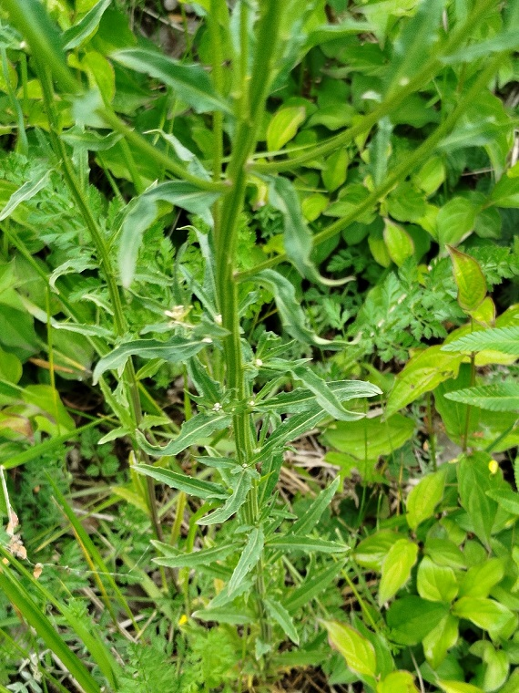
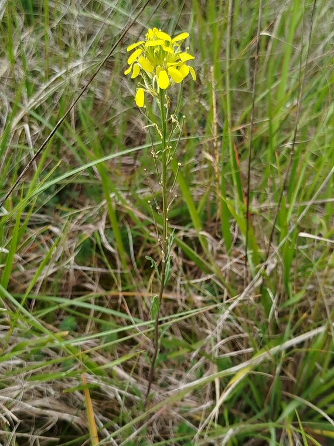

ERYSIMUM odoratum Ehrh.
Vélar odorantDans l'Yonne
- Très rare dans l'Yonne, classé RRR.
C'est une espèce xérophile, peut-être à éclipses ?
- Mode de vie : bisannuel ou pérenne.
- Période de floraison approximative :
Mai-Juin-Juillet-Août.
- Habitat : sur des sols peu profonds, secs, chauds, crayeux et calcaires.
- Tailles :
 ± 40 cm ± 40 cm

sépales ± 8 mm
pétales ± 15 mm
Origine supposée des noms
- générique : nom grec ancien, ἐρύσιμον (erúsimon), cité dans le Livre 18-XXII de l'Histoire Naturelle de Pline et que Linné avait latinisé pour l'un des genres de la XVe classe, Tétradynamie siliqueuse, de son Systema naturae.
- spécifique : adjectif latin qualifiant de nombreuses fleurs en raison de leur parfum.
Détails caractéristiques

18 mai 2026 - Photo © Jean-Paul Brulé
Coteaux calcaires à Pont-sur-Vanne
- Ses tiges étalées sont dressées et droites, mais cannelées.
- Ses feuilles basales, généralement fanées au moment de la floraison, sont dentées et ondulées. Les feuilles caulinaires sont alternes et les supérieures couvertes de poils épars.
- Ses inflorescences en grappes s'allongent au fur et à mesure de leur floraison qui commence par le bas. Elles portent des fleurs hermaphrodites à 4 sépales et à 4 pétales de couleur jaune. Elles ont plusieurs étamines dont les grains de pollen sont de taille moyenne et 1 style au stigmate bilobé. Elles attirent tout un cortège d'insectes pollinisateurs variés, surtout le matin quand leur parfum est plus intense.
- Ses fruits sont des siliques dressées et quadrangulaires contenant des graines minuscules de couleur brun clair.

18 mai 2026 - Photo © Jean-Paul Brulé
Coteaux calcaires à Pont-sur-Vanne
Nombre d'espèces icaunaises dans le genre
|